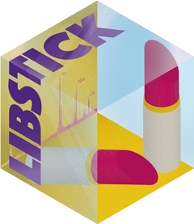

Sujet de recherche : mesurer la dureté d'un matériau grâce à la spectrométrie de plasma induite par laser (LIBS)
CNRS, Archéosciences Bordeaux (UMR 6034), 2023
- Question
- Peut-on estimer la dureté d'un alliage cuivreux sans essai mécanique, à partir de son spectre LIBS ?
- Démarche
- Acquisition de spectres par spectroscopie de plasma induit par laser (LIBS), puis recherche de corrélations entre l'intensité de certaines raies d'émission et la dureté mesurée des échantillons.
- Livrables
- Rapport de recherche et présentation des résultats.
- Spectroscopie LIBS
- Analyses statistiques
- Calcul d'incertitudes
- LIBStick